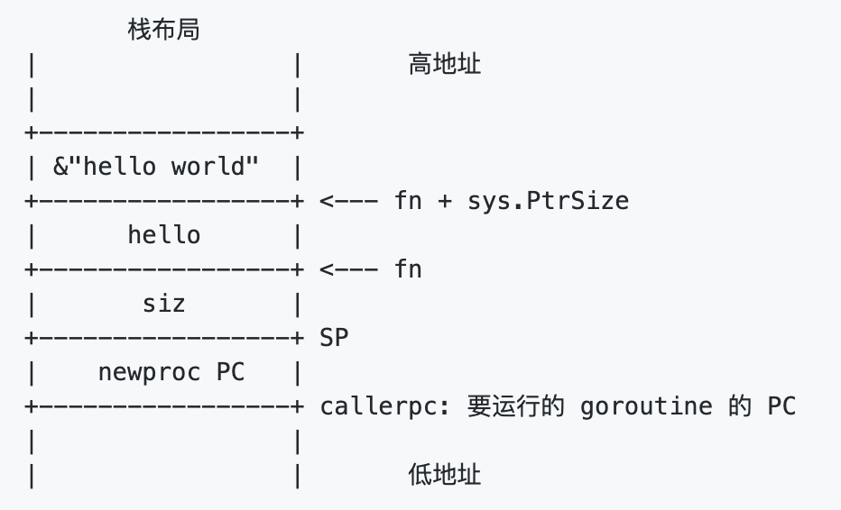
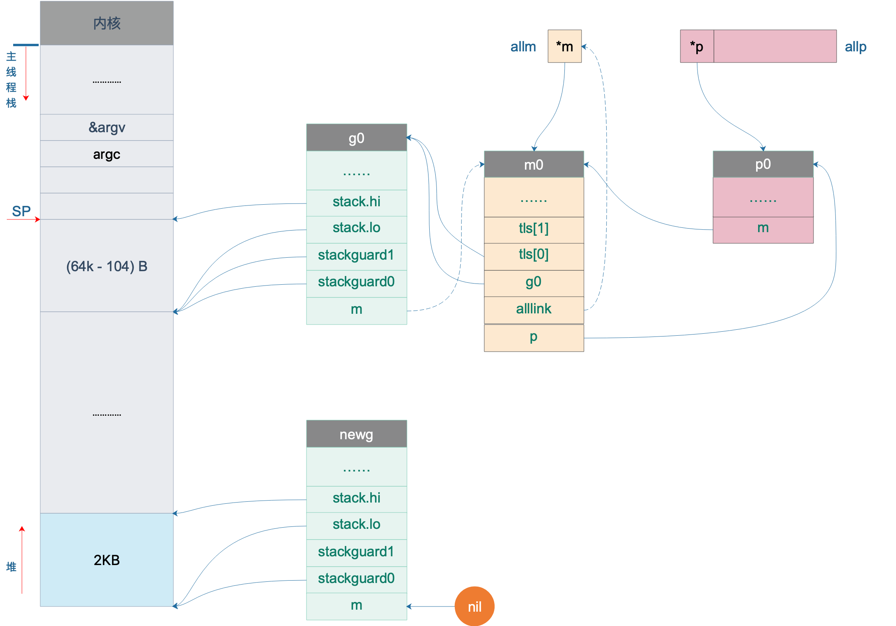

上一讲我们讲完了 Go scheduler 的初始化，现在调度器一切就绪，就差被调度的实体了。本文就来讲述 main goroutine 是如何诞生，并且被调度的。
继续看代码，前面我们完成了 schedinit 函数，这是 runtime·rt0_go 函数里的一步，接着往后看：
1
2
3
4
5
6
7
8
9
10
11
12
13
14
15
16
17
18
19
20
|
// 创建一个新的 goroutine 来启动程序
MOVQ $runtime·mainPC(SB), AX // entry
// newproc 的第二个参数入栈，也就是新的 goroutine 需要执行的函数
// AX = &funcval{runtime·main},
PUSHQ AX
// newproc 的第一个参数入栈，该参数表示 runtime.main 函数需要的参数大小，
// 因为 runtime.main 没有参数，所以这里是 0
PUSHQ $0 // arg size
// 创建 main goroutine
CALL runtime·newproc(SB)
POPQ AX
POPQ AX
// start this M
// 主线程进入调度循环，运行刚刚创建的 goroutine
CALL runtime·mstart(SB)
// 永远不会返回，万一返回了，crash 掉
MOVL $0xf1, 0xf1 // crash
RET
|
代码前面几行是在为调用 newproc 函数构“造栈”，执行完 runtime·newproc(SB) 后，就会以一个新的 goroutine 来执行 mainPC 也就是 runtime.main() 函数。runtime.main() 函数最终会执行到我们写的 main 函数，舞台交给我们。
重点来看 newproc 函数：
1
2
3
4
5
6
7
|
// src/runtime/proc.go
// 创建一个新的 g，运行 fn 函数，需要 siz byte 的参数
// 将其放至 G 队列等待运行
// 编译器会将 go 关键字的语句转化成此函数
//go:nosplit
func newproc(siz int32, fn *funcval)
|
从这里开始要进入 hard 模式了，打起精神！当我们随手一句：
1
2
3
|
go func() {
// 要做的事
}()
|
就启动了一个 goroutine 的时候，一定要知道，在 Go 编译器的作用下，这条语句最终会转化成 newproc 函数。
因此，newproc 函数需要两个参数：一个是新创建的 goroutine 需要执行的任务，也就是 fn，它代表一个函数 func；还有一个是 fn 的参数大小。
再回过头看，构造 newproc 函数调用栈的时候，第一个参数是 0，因为 runtime.main 函数没有参数：
1
2
3
|
// src/runtime/proc.go
func main()
|
第二个参数则是 runtime.main 函数的地址。
可能会感到奇怪，为什么要给 newproc 传一个表示 fn 的参数大小的参数呢？
我们知道，goroutine 和线程一样，都有自己的栈，不同的是 goroutine 的初始栈比较小，只有 2K，而且是可伸缩的，这也是创建 goroutine 的代价比创建线程代价小的原因。
换句话说，每个 goroutine 都有自己的栈空间，newproc 函数会新创建一个新的 goroutine 来执行 fn 函数，在新 goroutine 上执行指令，就要用新 goroutine 的栈。而执行函数需要参数，这个参数又是在老的 goroutine 上，所以需要将其拷贝到新 goroutine 的栈上。拷贝的起始位置就是栈顶，这好办，那拷贝多少数据呢？由 siz 来确定。
继续看代码，newproc 函数的第二个参数：
1
2
3
4
|
type funcval struct {
fn uintptr
// variable-size, fn-specific data here
}
|
它是一个变长结构，第一个字段是一个指针 fn，内存中，紧挨着 fn 的是函数的参数。
参考资料【欧神 关键字 go】有一个例子：
1
2
3
4
5
6
7
8
9
|
package main
func hello(msg string) {
println(msg)
}
func main() {
go hello("hello world")
}
|
栈布局是这样的：

栈顶是 siz，再往上是函数的地址，再往上就是传给 hello 函数的参数，string 在这里是一个地址。因此前面代码里先 push 参数的地址，再 push 参数大小。
1
2
3
4
5
6
7
8
9
10
11
12
13
14
15
16
|
// src/runtime/proc.go
//go:nosplit
func newproc(siz int32, fn *funcval) {
// 获取第一个参数地址
argp := add(unsafe.Pointer(&fn), sys.PtrSize)
// 获取调用者的指令地址，也就是调用 newproc 时由 call 指令压栈的函数返回地址
pc := getcallerpc(unsafe.Pointer(&siz))
// systemstack 的作用是切换到 g0 栈执行作为参数的函数
// 用 g0 系统栈创建 goroutine 对象
// 传递的参数包括 fn 函数入口地址，argp 参数起始地址，siz 参数长度，调用方 pc（goroutine）
systemstack(func() {
newproc1(fn, (*uint8)(argp), siz, 0, pc)
})
}
|
因此，argp 跳过 fn，向上跳一个指针的长度，拿到 fn 参数的地址。
接着通过 getcallerpc 获取调用者的指令地址，也就是调用 newproc 时由 call 指令压栈的函数返回地址，也就是 runtime·rt0_go 函数里 CALL runtime·newproc(SB) 指令后面的 POPQ AX 这条指令的地址。
最后，调用 systemstack 函数在 g0 栈执行 fn 函数。由于本文讲述的是初始化过程中，由 runtime·rt0_go 函数调用，本身是在 g0 栈执行，因此会直接执行 fn 函数。而如果是我们在程序中写的 go xxx 代码，在执行时，就会先切换到 g0 栈执行，然后再切回来。
一鼓作气，继续看 newproc1 函数，为了连贯性，我先将整个函数的代码贴出来，并且加上了注释。当然，这篇文章不会涉及到所有的代码，只会讲部分内容。放在这里，方便阅读后面的文章时对照：
1
2
3
4
5
6
7
8
9
10
11
12
13
14
15
16
17
18
19
20
21
22
23
24
25
26
27
28
29
30
31
32
33
34
35
36
37
38
39
40
41
42
43
44
45
46
47
48
49
50
51
52
53
54
55
56
57
58
59
60
61
62
63
64
65
66
67
68
69
70
71
72
73
74
75
76
77
78
79
80
81
82
83
84
85
86
87
88
89
90
91
92
93
94
95
96
97
98
99
100
101
102
103
|
// 创建一个新的 g 来跑 fn
func newproc1(fn *funcval, argp *uint8, narg int32, nret int32, callerpc uintptr) *g {
// 当前 goroutine 的指针
// 因为已经切换到 g0 栈，所以无论什么场景都是 _g_ = g0
// g0 是指当前工作线程的 g0
_g_ := getg()
if fn == nil {
_g_.m.throwing = -1 // do not dump full stacks
throw("go of nil func value")
}
_g_.m.locks++ // disable preemption because it can be holding p in a local var
// 参数加返回值所需要的空间（经过内存对齐）
siz := narg + nret
siz = (siz + 7) &^ 7
// …………………………
// 当前工作线程所绑定的 p
// 初始化时 _p_ = g0.m.p，也就是 _p_ = allp[0]
_p_ := _g_.m.p.ptr()
// 从 p 的本地缓冲里获取一个没有使用的 g，初始化时为空，返回 nil
newg := gfget(_p_)
if newg == nil {
// new 一个 g 结构体对象，然后从堆上为其分配栈，并设置 g 的 stack 成员和两个 stackgard 成员
newg = malg(_StackMin)
// 初始化 g 的状态为 _Gdead
casgstatus(newg, _Gidle, _Gdead)
// 放入全局变量 allgs 切片中
allgadd(newg) // publishes with a g->status of Gdead so GC scanner doesn't look at uninitialized stack.
}
if newg.stack.hi == 0 {
throw("newproc1: newg missing stack")
}
if readgstatus(newg) != _Gdead {
throw("newproc1: new g is not Gdead")
}
// 计算运行空间大小，对齐
totalSize := 4*sys.RegSize + uintptr(siz) + sys.MinFrameSize // extra space in case of reads slightly beyond frame
totalSize += -totalSize & (sys.SpAlign - 1) // align to spAlign
// 确定 sp 位置
sp := newg.stack.hi - totalSize
// 确定参数入栈位置
spArg := sp
// …………………………
if narg > 0 {
// 将参数从执行 newproc 函数的栈拷贝到新 g 的栈
memmove(unsafe.Pointer(spArg), unsafe.Pointer(argp), uintptr(narg))
// …………………………
}
// 把 newg.sched 结构体成员的所有成员设置为 0
memclrNoHeapPointers(unsafe.Pointer(&newg.sched), unsafe.Sizeof(newg.sched))
// 设置 newg 的 sched 成员，调度器需要依靠这些字段才能把 goroutine 调度到 CPU 上运行
newg.sched.sp = sp
newg.stktopsp = sp
// newg.sched.pc 表示当 newg 被调度起来运行时从这个地址开始执行指令
newg.sched.pc = funcPC(goexit) + sys.PCQuantum // +PCQuantum so that previous instruction is in same function
newg.sched.g = guintptr(unsafe.Pointer(newg))
gostartcallfn(&newg.sched, fn)
newg.gopc = callerpc
// 设置 newg 的 startpc 为 fn.fn，该成员主要用于函数调用栈的 traceback 和栈收缩
// newg 真正从哪里开始执行并不依赖于这个成员，而是 sched.pc
newg.startpc = fn.fn
if _g_.m.curg != nil {
newg.labels = _g_.m.curg.labels
}
if isSystemGoroutine(newg) {
atomic.Xadd(&sched.ngsys, +1)
}
newg.gcscanvalid = false
// 设置 g 的状态为 _Grunnable，可以运行了
casgstatus(newg, _Gdead, _Grunnable)
if _p_.goidcache == _p_.goidcacheend {
_p_.goidcache = atomic.Xadd64(&sched.goidgen, _GoidCacheBatch)
_p_.goidcache -= _GoidCacheBatch - 1
_p_.goidcacheend = _p_.goidcache + _GoidCacheBatch
}
// 设置 goid
newg.goid = int64(_p_.goidcache)
_p_.goidcache++
// ……………………
// 将 G 放入 _p_ 的本地待运行队列
runqput(_p_, newg, true)
if atomic.Load(&sched.npidle) != 0 && atomic.Load(&sched.nmspinning) == 0 && mainStarted {
wakep()
}
_g_.m.locks--
if _g_.m.locks == 0 && _g_.preempt {
_g_.stackguard0 = stackPreempt
}
return newg
}
|
当前代码在 g0 栈上执行，因此执行完 _g_ := getg() 之后，无论是在什么情况下都可以得到 _g_ = g0。之后通过 g0 找到其绑定的 P，也就是 p0。
接着，尝试从 p0 上找一个空闲的 G：
1
2
|
// 从 p 的本地缓冲里获取一个没有使用的 g，初始化时为空，返回 nil
newg := gfget(_p_)
|
如果拿不到，则会在堆上创建一个新的 G，为其分配 2KB 大小的栈，并设置好新 goroutine 的 stack 成员，设置其状态为 _Gdead，并将其添加到全局变量 allgs 中。创建完成之后，我们就在堆上有了一个 2K 大小的栈。于是，我们的图再次丰富：

这样，main goroutine 就诞生了。
参考资料
#
【欧神 关键字 go】https://github.com/changkun/go-under-the-hood/blob/master/book/zh-cn/part3compile/ch11keyword/go.md
【欧神 Go scheduler】https://github.com/changkun/go-under-the-hood/blob/master/book/zh-cn/part2runtime/ch06sched/init.md